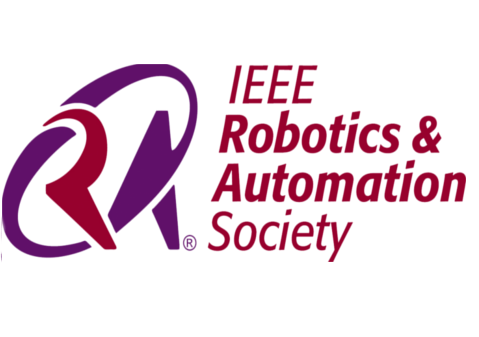
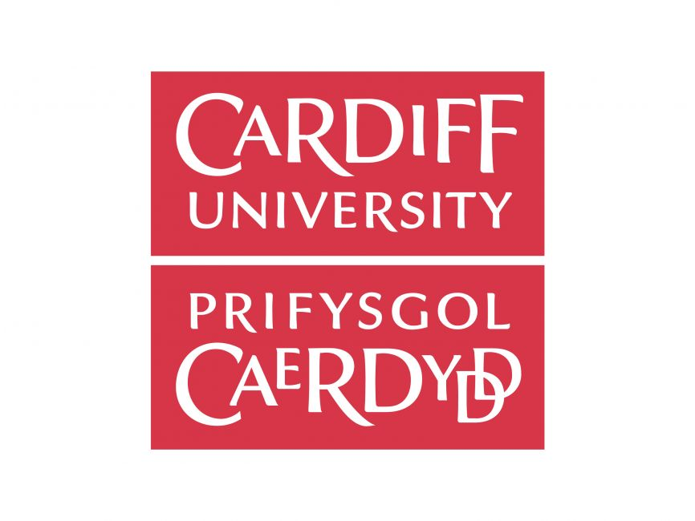
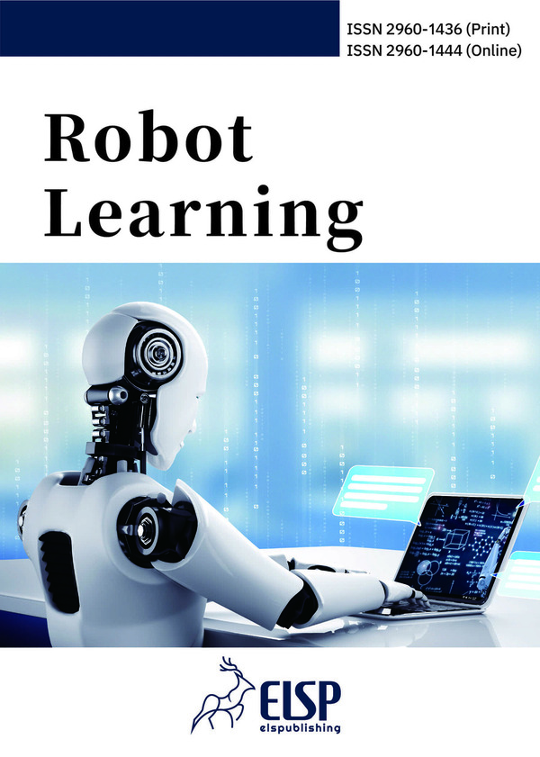

About the Workshop
Generative AI (GenAI) techniques, including stable diffusion, are transforming robotic perception and development by enabling rapid multimodal data generation and novel scene synthesis from prompts in text, images, and other modalities. This makes GenAI a scalable and diverse alternative for data generation, complementary to physical simulators like Mujoco and Isaac Lab.
This workshop brings together leading experts in AI, robotics, computer vision, and simulation to explore how GenAI can enhance robotic development and deployment, focusing on combining GenAI's diversity and scalability in data generation with physics-aware simulation to improve real-world transferability. It aims to establish a cloud-based framework for benchmarking robotic performance using GenAI-generated datasets.
Call for Papers
We invite submissions presenting novel research, methodologies, and applications related to robotic data generation, evaluation, and the integration of generative AI with simulation and real-world deployment. All papers will be peer-reviewed for originality, relevance, technical quality, and clarity. Accepted papers will be presented as posters. At least one author must attend in person to present.
Topics of Interest:
- Generative AI for robotic data generation and simulation
- Task-aligned and physically realistic data synthesis for robotics
- Evaluation and benchmarking of generated data and trained models
- Multimodal data generation and prompt alignment for robotics tasks
- Bridging simulation and real-world deployment in robotics
- Cloud-based robotic evaluation platforms and benchmarking frameworks
- Applications of GenAI in manipulation, navigation, and teleoperation
- Datasets, metrics, and reproducibility in robotic data generation
Awards:
- Best Paper Award: $200 USD will be awarded to the most outstanding paper as selected by the program committee.
- Best Poster Award: $400 USD will be awarded to the best poster presentation.
Important Dates:
- Provisional Deadline for Paper submissions: September 15, 2025
- Provisional Notification of acceptance: September 22, 2025
Late-Breaking Work Paper Submission:
- Deadline for Paper submissions: September 15, 2025
- Notification of acceptance: September 22, 2025
Submission Instructions:
- There is no page limit for submitted papers, but they should fall within the scope of the workshop
- We welcome both new research contributions and previously published works
- Presenting your work at the workshop will not interfere with its future publication elsewhere
- Please use the main conference’s format guidelines and template, available here
- Submit your paper via OpenReview.
- Or if you have issues submitting via OpenReview, you can submit your paper in PDF format via email to: rodge.iros25@gmail.com
Tentative Program
| Time | Talk | Tentative Titles and Comments |
|---|---|---|
| 1:00 – 1:10 | Opening Remarks | Introduction to the workshop theme and objectives. |
| 1:10 – 1:35 | Keynote Talk by Peter Yichen Chen | Robot Proprioception Meets Differentiable Simulation. |
| 1:35 – 2:00 | Keynote Talk by Shan Luo | Data Generation for Visual-Tactile Sensing. |
| 2:00 – 2:25 | Keynote Talk by Anh Nguyen | Generative AI for Language-driven Grasping. |
| 2:25 – 2:50 | Keynote Talk by Weiwei Wan | Advantages and challenges of learning methods in robotic manipulation. |
| 2:50 – 3:40 | Coffee Break, Poster Session & Live Demo | Two poster/demo sessions (25 min each) and informal networking. |
| 3:40 – 4:05 | Keynote Talk by Xiaoshuai Hao | Exploring Multimodal Visual Language Models for Embodied Intelligence. |
| 4:05 – 4:30 | Keynote Talk by Florian T. Pokorny | Towards Data-Driven Robotic Manipulation Research at Scale. |
| 4:30 – 4:55 | Panel Discussion | Keynote speakers and organisers discuss challenges, best practices, and future directions with the audience. |
| 4:55 – 5:00 | Awards & Closing Remarks | Summary of key takeaways, awards announcement, and closing statements. |
Poster Sessions
The poster session is split into two slots: posters 1–8 (2:50–3:15) and posters 9–14 (3:15–3:40). Posters are assigned to boards 1–8 (boards reused in the second slot where applicable).
| Time | Poster Boards and Poster Number | Paper Title |
|---|---|---|
| 2:50 – 3:15 | Board 1 – Poster 1 | LoopSR: Looping Sim-and-Real for Lifelong Policy Adaptation of Legged Robots |
| 2:50 – 3:15 | Board 2 – Poster 2 | Empirical Analysis of Sim-and-Real Cotraining of Diffusion Policies for Planar Pushing from Pixels |
| 2:50 – 3:15 | Board 3 – Poster 3 | PlanOwl: Automated PDDL Files Generation from OWL Ontologies and Visual Language Models |
| 2:50 – 3:15 | Board 4 – Poster 4 | Prompt2Robotics: A Prompt-driven Framework for Automated Environment Generation and Policy Training |
| 2:50 – 3:15 | Board 5 – Poster 5 | Controllable Crowd Spawn Simulation for Social Robot Navigation via Guided Joint Spatio-Temporal Diffusion |
| 2:50 – 3:15 | Board 6 – Poster 6 | ArtVIP: Articulated Digital Assets of Visual Realism, Modular Interaction, and Physical Fidelity for Robot Learning |
| 2:50 – 3:15 | Board 7 – Poster 7 | RT-Diffuser: Real-Time Diffusion Planning with Information-Dense Trajectory Representation |
| 2:50 – 3:15 | Board 8 – Poster 8 | CollaGen: Collaborative Generative Learning in Heterogeneous Robot Teams |
| 3:15 – 3:40 | Board 1 – Poster 9 | BoxTwin: Learning Elastoplastic Articulated Object Dynamics from Videos |
| 3:15 – 3:40 | Board 2 – Poster 10 | GBPP: Grasp-Aware Base Placement Prediction for Robots via Two-Stage Learning |
| 3:15 – 3:40 | Board 3 – Poster 11 | RoboAfford++: A Generative AI-Enhanced Dataset for Multimodal Affordance Learning in Robotic Manipulation and Navigation |
| 3:15 – 3:40 | Board 4 – Poster 12 | RoboTwin 2.0: A Scalable Data Generator and Benchmark with Strong Domain Randomization for Robust Bimanual Robotic Manipulation |
| 3:15 – 3:40 | Board 5 – Poster 13 | How Well Do Diffusion Policies Learn Kinematic Constraint Manifolds? |
| 3:15 – 3:40 | Board 6 – Poster 14 | RoboVerse: Towards a Unified Platform, Dataset, and Benchmark for Scalable and Generalizable Robot Learning |
Invited Speakers

Organizers

Student Organizer

Supporting IEEE RAS technical committees

Supported by


